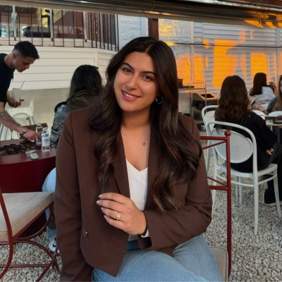

GET TO KNOW ME
A little more about my journey, education, technical skills and experience.

ABOUT ME
I was born on November 4, 2002, in Antalya. Sports have always been an important part of my life. I played volleyball for nearly 10 years and practiced Aikido for 3 years.
In 2021, I moved to Ankara to pursue my university education at Hacettepe University. As a fourth-year student on the 100 per cent English-taught Surveying Engineering programme, I am enhancing my skills in spatial information systems and data analysis through academic projects and professional work placements.
I am particularly interested in combining geographic information with technology to create useful, accessible and interactive solutions.
ACADEMIC JOURNEY
Ankara, Türkiye
Antalya, Türkiye
Antalya, Türkiye
WHAT I WORK WITH
PROFESSIONAL JOURNEY
Generated WMS URLs for zoning plans at different scales and integrated them into the system. I also contributed to map service creation, Excel filtering and error checking processes, and Netigma database matching.
Studied zoning practices related to Articles 15, 16 and 18 and gained experience with zoning plan and parcellation processes. I also contributed to the preparation of situation maps and measurement sketches.
Worked on the integration and management of hydrological lines, streams and water-related geographic data within the system.
Processed data collected with GNSS technologies and participated in office workflows related to the production of current base maps.
COMMUNITY & LEADERSHIP
2026 — 2027: Member of the audit committee
2025 — 2026: President
2024 — 2025: General Secretary
2023 — 2024: Field & Organization Secretary
General Coordinator
Served as the General Coordinator of GeoCareer '26, bringing together companies in the sector and university students. Managed sponsorship negotiations, coordinated speaker invitations and contributed to the logistical planning and organization of the event.
View Event Details →Hacettepe University Geomatics Engineering Student Representative
2024 — 2025 / 2025 — 2026
Executive Board Member
2024 — 2025 / 2025 — 2026